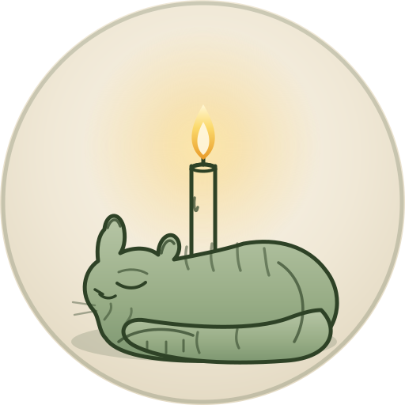
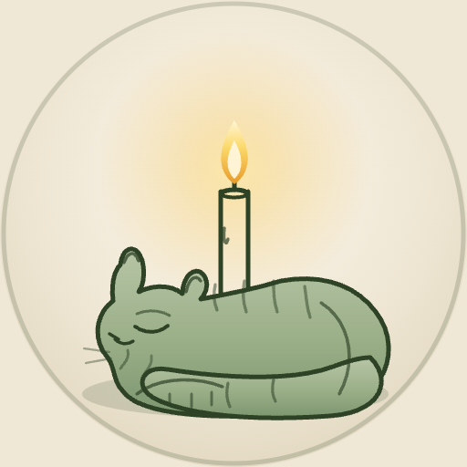
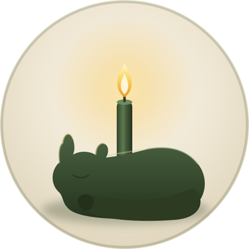

Кіт біля свічки · лінійна гравюра, оливковий монохром на кремі

Як читається у малих розмірах
Файл для екрана згоди Google

Завантаж dilibris-cat-google.png — квадрат 512×512 з кремовим тлом (кутики не прозорі), <1 МБ.
Запасний знак для крихітних розмірів

На фавіконі чи 16–32 px тонкі штрихи гравюри зливаються. Для таких місць є силует-версія (dilibris-cat-silhouette.svg) — простіша форма, що лишається чіткою навіть крихітною. Гравюра — основний знак; силует — резерв.